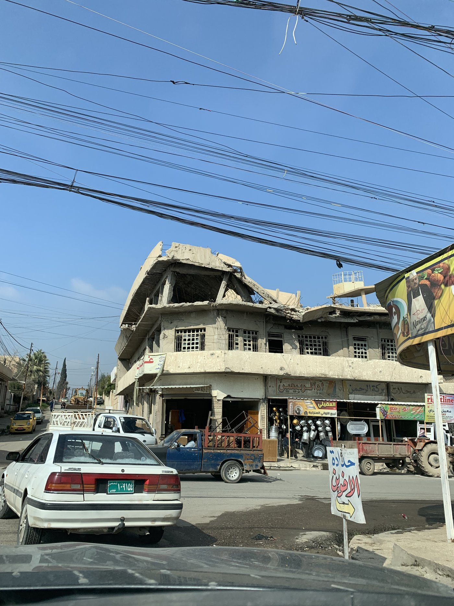

Benjamin Krick, Jonathan Petkun & Mara R. Revkin
79 International Organization 332–357 (2025)
Abstract
The legitimacy of armed forces in the eyes of civilians is increasingly recognized as crucial not only for battlefield effectiveness but also for conflict resolution and peace building. However, the concept of “military legitimacy” remains under-theorized and its determinants poorly understood. We argue that perceptions of military legitimacy are shaped by two key dimensions of warfare: just cause and just conduct. Leveraging naturally occurring variation during one of the deadliest urban battles in recent history—the multinational campaign to defeat the Islamic State in Mosul, Iraq—we evaluate our theory using a mixed-methods design that combines original survey data, satellite imagery, and interviews. Civilians living in neighborhoods where armed forces were less careful to protect civilians view those forces as less legitimate than civilians elsewhere. Surprisingly, these results persist after conditioning on personal experiences of harm, suggesting that perceptions are influenced not only by victimization—consistent with previous studies—but also by beliefs about the morality of armed forces’ conduct and the cause for which they are fighting.
Download the PDF from the Duke Law Scholarship Repository →
Repository record →

A child’s drawing of an airstrike, labelling one house “bombed” (مقصوف) and the other “not bombed” (غير مقصوف), east of Mosul (Revkin 2017)

A street in the Old City of West Mosul, two years after the battle to retake the city (Revkin 2019)

Shops trading beneath a building damaged in the battle for Mosul (Revkin 2019)
Back to Research Areas.